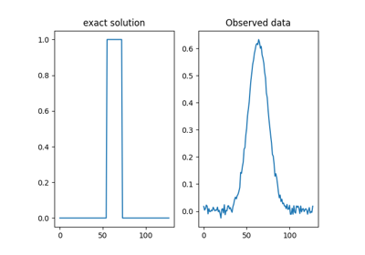
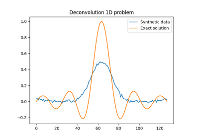
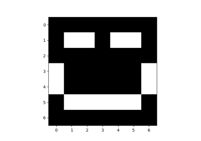
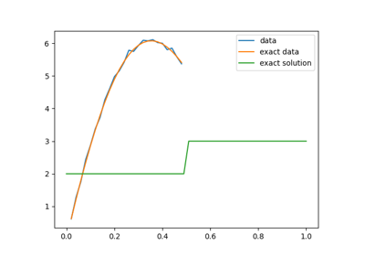

Tutorials#
Below is a gallery of tutorials to get you started.



Gibbs sampling


Uncertainty Quantification in one-dimensional deconvolution
Uncertainty Quantification in one-dimensional deconvolution

Support vector representation of function values in CUQIpy geometries and samples
Support vector representation of function values in CUQIpy geometries and samples

Setting a Bayesian model with multiple likelihoods
Setting a Bayesian model with multiple likelihoods